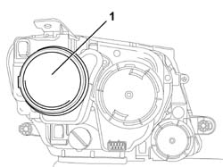
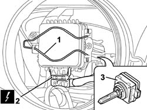

5540B44 DIPPED BEAM FOR ONE GAS DISCHARGE LIGHTING UNIT ONE LH OR RH R R
- Path
- Procedures > 55 ELECTRICAL EQUIPMENT > 5540 EXTERIOR LIGHTING > 5540B HEADLAMPS > 5540B44 DIPPED BEAM FOR ONE GAS DISCHARGE LIGHTING UNIT ONE LH OR RH R R
- Kind
- repair procedure (removal / refitting; the operation number is the code)
- Applies to
- all engines; all production periods
- Interactive page
- https://sloeber94.github.io/elrnDB-fUlss/en/#/179007578
Applies to: all engines; all production periods
 Removing
Removing
 Refitting
RefittingOp. 5530B56 BATTERY DRIP TRAY COVER - R.R.
- Disconnect the negative battery terminal.
1. Remove the rubber plug.

Applies to: all engines; all production periods
1. Release the retaining spring.
2. Disconnect the electrical connection.
3. Remove the bulb.

Applies to: all engines; all production periods
Refitting
Removing- Position the bulb.
- Attach the retaining spring.
- Connect the electrical connection.
- Position the rubber plug.
- Connect the negative battery terminal.